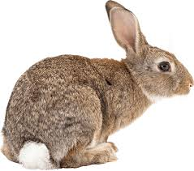

COOKIE CUTTERS For assignment 1, I decided to make a trio of cookie cutters in the shape of animals using Rhino modeling software. The animals I chose were a bunny, a red panda, and a chow chow.

First, I found an image on the internet of the animal I wanted to make.
Next, I adjusted the levels, threshold, saturation, and color until I was satisified that the image would trace easily in Illustrator.
Once in Illustrator, I live traced the object, creating the vector points. I then deleted the background, and a highlight from the tail. Once I was satisified with the
vector file I exported the shape as a .dxf file.
Next, I imported the .dxf file into Rhino. I exploded the shape so I could see the vector points, and make sure my object was closed.
Then I used the offset function to create an outer wall (.1").
Once I had my outerwall, I used the extrude function to create the height (.5") and make it a solid shape. I then exported the file as an .stl, and continued the process again for the two toher shapes.


{kind=link}
{kind=link}
{kind=link}